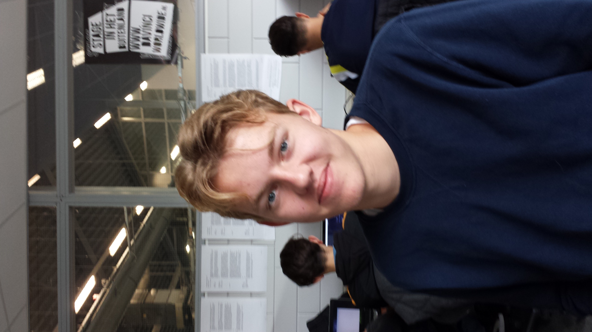

Wie ben ik?

Mijn naam is Aron Brinkman, 16 jaar oud en woon in Gorinchem.
Ik doe graag aan voetballen, gamen en kijk graag ook Netflix.
Voetballen doe ik al sinds mijn 6e jaar bij GJS Gorinchem, dus al 10 jaar zit ik op voetbal en nog steeds bij GJS.
Netflix kijk ik graag als ik thuiskom uit school of soms in de avond.
Aan gamen doe ik niet echt meer zo veel als voorheen, maar ik vind het nog wel leuk om een potje FIFA tegen vrienden te spelen bijvoorbeeld.
Verder ben ik geboren in Gorinchem en woon daar nog steeds, ik heb 2 jaar in Dalem gewoond, maar omdat mijn ouders gingen scheiden zijn ze allebei weer naar Gorinchem verhuisd.
De website van mijn voetbalvereniging in Gorinchem.

Kennis, vaardigheden, studies & werkervaring.
Kennis heb ik weinig over ICT, nog niet zo erg dat ik het al voor deze opleiding flink in ben gaan verdiepen, maar mijn vader doet dit ook dus ik heb al een heel klein beetje kennis.
Dit is mijn eerste studie, ik kom van het Fortes Lyceum in Gorinchem en ik heb een MAVO diploma behaald.
Ik werk nu zo'n 3 maanden bij Albert Heijn in het Piazza Center als vakkenvuller, daarvoor had ik een bijbaantje als folder bezorger voor de PLUS in Gorinchem.
Opleiding & motivatie
Ik heb voor deze opleiding gekozen omdat mijn vader ook ICT doet en het leek mij ook wel leuk en interessant.
Eerst wist ik het niet zeker of ik dit wel leuk zou vinden aangezien ik nog niet zeker wist wat ik later wilde worden, maar achteraf is het wel een leuke opleiding waarmee je veel kanten mee op kan.
Mijn motivatie is dat ik later een HBO opleiding wil gaan doen en in mijn achterhoofd houd dat ik later hier veel geld mee kan verdienen, omdat er veel vraag naar mensen in de ICT is.
Plus dat ik mensen trots kan maken als ik mijn diploma behaal.
Na schooltijd ben ik bereid om door te werken aan opdrachten als ik het begrijp, maar de eerste weken van deze opleiding is vooral even oefenen en kijken hoe het werkt, want ik heb hiervoor in mijn vrije tijd voor deze opleiding nog nooit met HTML gewerkt.
Ik vind het wel leuk en interessant maar nog wel lastig.
Ontwikkelpunten & vooropleiding
Ik hoop dat ik later goed genoeg ontwikkelt ben om zelf goede websites te bouwen en mensen te kunnen helpen die problemen hebben met computer of websites.
Verder wil ik ook graag fouten zelf kunnen vinden en op te kunnen lossen.
Zoals ik al eerder aangaf zat ik op het Fortes Lyceum (voorheen Merewade Wijdschild) in Gorinchem, ik heb in mijn eerste twee jaar HAVO gedaan, maar daarna werd het te lastig en ben ik in mijn derde en vierde jaar MAVO gaan doen.
Op deze vooropleiding heb ik al rekenen, Nederlands en Engels gehad dus daar heb ik nu wat aan, aangezien ik dat nog steeds heb.
Mijn middelbare schooltijd was top, want ik had veel vrienden en ging met plezier naar school.
Helaas ging ik als enige in het 3e jaar naar MAVO van mijn vriendengroep, maar gelukkig maakte ik in die laatste 2 jaar MAVO weer nieuwe vrienden.
Bijbaantjes
Mijn eerste bijbaantje was folders bezorgen voor PLUS Supermarkt in de Dalemse Donken elke zaterdag.
Daarvoor moest ik elke vrijdag de folders bij de supermarkt zelf ophalen en af en toe nog vouwen als dat nog niet gedaan was, dat kon wel een uur tot anderhalf uur duren, omdat het er zoveel waren.
Daarnaast deed ik het wel samen met mijn nichtje en het duurde zo'n 2 tot 2.5 uur voordat we klaar waren.
Ik moest zelf ook altijd (nog steeds) op zaterdag ochtend voetballen meestal had ik daarna altijd last van mijn benen, dus de folders daarachteraan doen was best zwaar.
Mijn tweede en huidige bijbaantje is vakkenvuller bij Albert Heijn supermarkt, ik moet 3 ochtenden per week van 6 uur 's ochtends tot 8 uur werken, dus als ik ooit een keer moe op school ben weet u waarom.
Geleerd van bijbaantjes
Ik heb geleerd van mijn bijbaantjes dat je eigen verantwoordelijkheid hebt en ik denk dat dat hier op school ook is, want als het je niets interesseert en niets uitvoerd, ze je ook geen aandacht geven en cijfers.
Verder heb ik ook geleerd van mijn baantjes is socialiteit, dus met mensen omgaan, dat klinkt misschien een beetje raar, maar ik ben wel een beetje verlegen en ik voel wel dat ik hierop ben vooruitgegaan de laatste maanden.